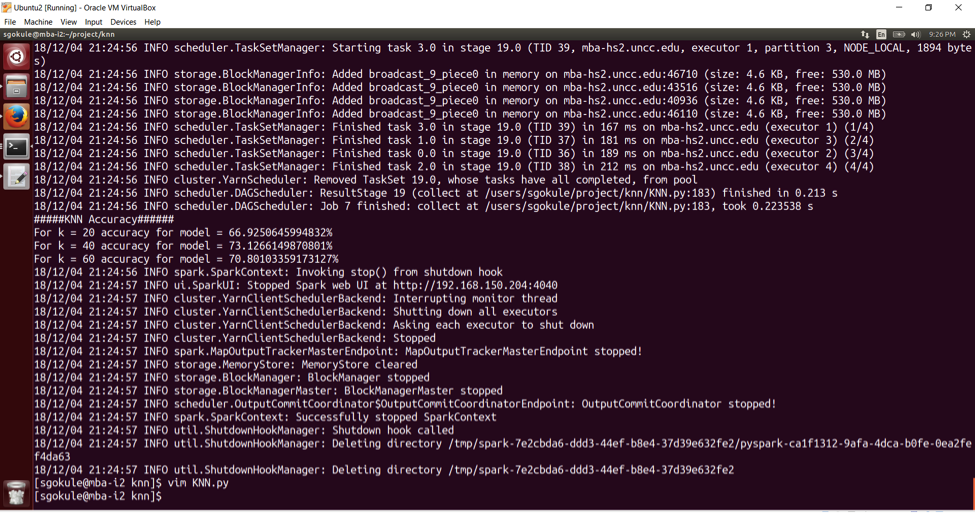
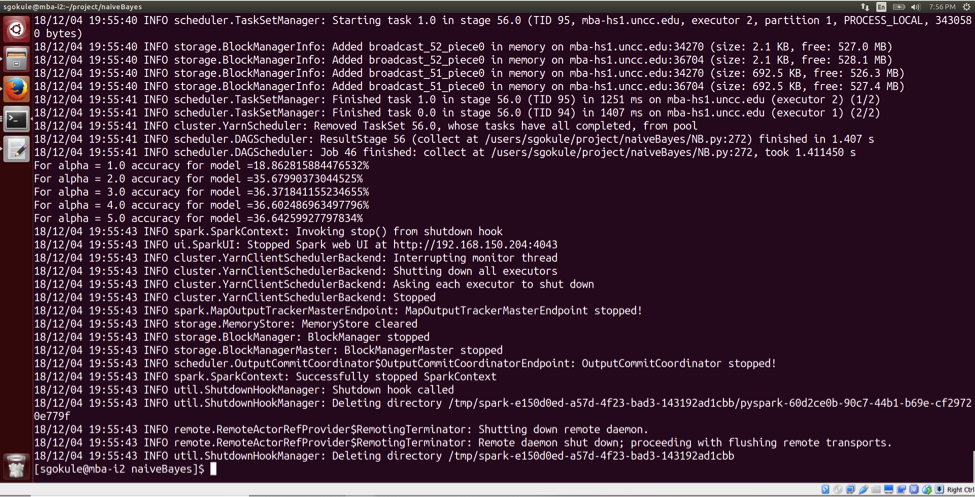
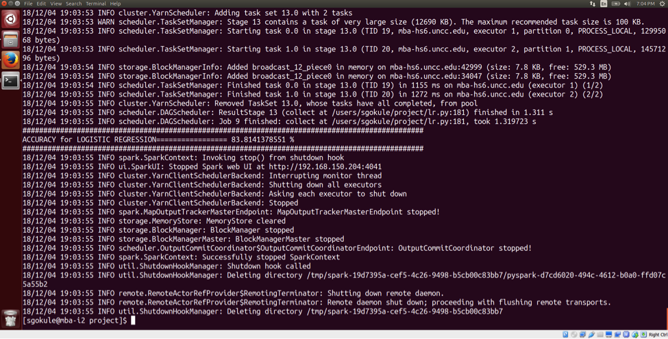

-Team 11-
Nikita Nalawade - 801024520
Priyanka Sawant - 801024108
Siddhant Gokule - 801017213
Tharika Ganesh - 801019491
The Amazon Fine Food reviews dataset provides us with reviews given by the customers and the score related to them. The main aim here is to predict the rating based on this information. As the restaurants which get positive reviews are most likely to be visited by people, we want to build a recommendation system by using different algorithms and testing which algorithm gives the best result. Amazon Fine Food Review data set consists of about 568,454 food reviews Amazon users left upto October 2012.
The project uses classification to predict ratings and classify reviews. It includes implementation of three algorithms: K-Nearest Neighbors, Naive Bayes & Logistic Regression. The tasks involved are-
- Pre-processing the data which includes removal of stop words, stemming, lemming, removal of all non-alphanumeric characters
-Distributed the dataset in the cluster
- Implementation of algorithms from scratch in pyspark
- Determining the accuracy of the algorithms for the trained data set
- Implementation and Comparison of the accuracy with different algorithms
We are using Amazon fine food review data set from Kaggle. The data set consists of user reviews in the form of rating, written review, user details on fine food from Amazon. The data set is large and consist of many useful attributes based on which we will train our model to predict the rating given the various values of the attributes.
Dataset link: Amazon Food Reviews
Dataset Size: 251 MB
K-Nearest Neighbors and Naive Bayes Algorithms have been implemented in pyspark to classify reviews.
Naive Bayes methods are a set of supervised learning algorithms based on applying 'Bayes' theorem with the 'naive' assumption of independence between every pair of features.
In other words, Naive Bayes is a conditional probability model.
It is an intuitive method that uses probabilities of each attribute belonging to each class to make a prediction.
The multinomial Naive Bayes with smoothing has been implemented. To classify, we calculated probabilities of the review belonging to each rating and then selected the class value with highest probability.
We have performed computations by summing logs of probabilities rather than multiplying probabilities for underflow prevention.
K-Nearest Neighbors algorithm is an instance-based algorithm and belongs to the family of competitive learning and lazy learning algorithms. For the prediction of rating, the algorithm searches through the training dataset for the k most similar instances.
Logistic regression is a predictive analysis used to describe data and to explain the relationship between one dependent binary variable and one or more nominal, ordinal, interval or ratio-level independent variables.It is the most common methods to solve for Binary Classification. The goal of Logistic Regression is to evaluate the probability of a discrete outcome occurring, based on a set of past inputs and outcomes. In Binary Classification we’re trying to distinguish between just two discrete classes (Rating Below 3 is 0 and Above 3 is 1)
The core deliverables include-
- Implementation of K-Nearest Neighbors, Naive Bayes algorithms and Logistic Regression to classify reviews
- Pre-processing of data set using NLTK libraries
- Comparison of accuracy of implemented algorithms



https://www.kaggle.com/snap/amazon-fine-food-reviews
https://scikit-learn.org/stable/modules/generated/sklearn.cluster.KMeans.html
https://scikit-learn.org/stable/modules/svm.html
https://scikit-learn.org/stable/modules/naive_bayes.html
https://scikit-learn.org/stable/modules/generated/sklearn.neural_network.MLPClassifier.html
Nikita Nalawade
-Dividing the dataset into training and validation dataset
-Build and train the model to predict the rating using K-nearest neighbours algorithm on Spark
Priyanka Sawant
-Perform Data Cleaning and preprocessing like data normalization, stemming and lemmatization
-Build model using Naive- Bayes and compare it with KNN model
Tharika Ganesh
-Responsible for data cleaning, data preprocessing
-Building model using the k-Nearest Neighbors algorithm
-Calculating the accuracy of the model
Siddhant Gokule
-Build model using logistic regression
-Comparative analysis of all the models and suggest best suited model for chosen dataset